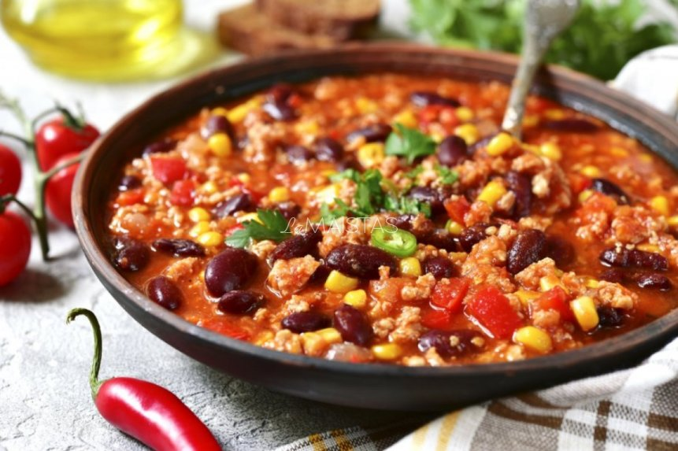
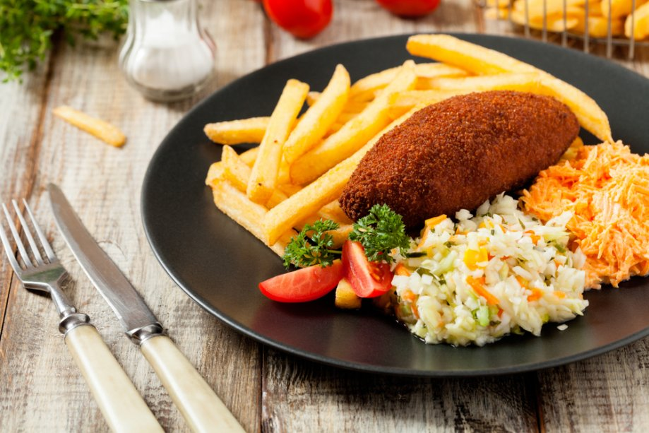
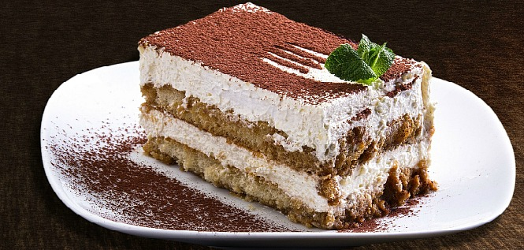

|  |  |  |
|---|---|---|
| 1. | 2. | 3. |
1.-Čili sriuba. Ji yra kilusi iš Teksaso. Artėjant žiemos sezonui taip norisi sušildyti skrandukus karšta, deginančia aštrumu sriubyte.
Šis patiekalas labai greit pagaminamas, sotus, skanus.
2. Kijevo kotletas – bene populiariausias vištienos patiekalas, kuris pirmiausia baigiasi kavinių virtuvėse pietų metu.
Dauguma valgytojų įsivaizduoja, kad pagaminti jį gali tik didžiausi meistrai, tačiau tai netiesa! Svarbiausia yra norėti ir bandyti.
3.Tiramisu yra itališkas desertas, gaminamas iš sausainių „pirštelių“, išmirkytų kavoje, kiaušinio trynių ir maskarponės sūrio.
Tiramisu gardinamas Marsalos vynu ir kakavos milteliais. Tiramisu receptai buvo pritaikyti įvairiems pudingams, pyragams ir kitiems desertams.